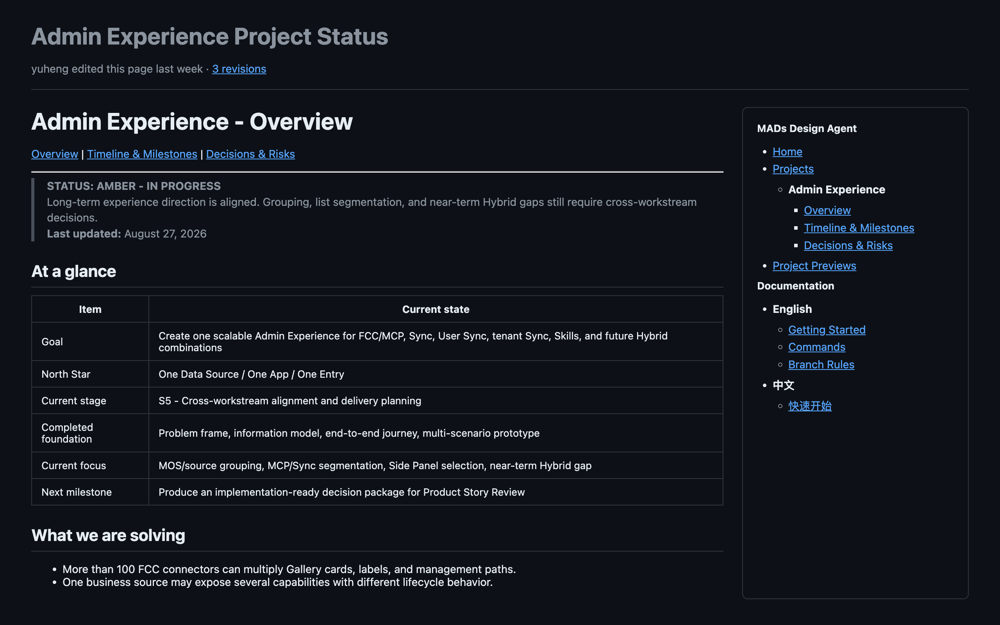
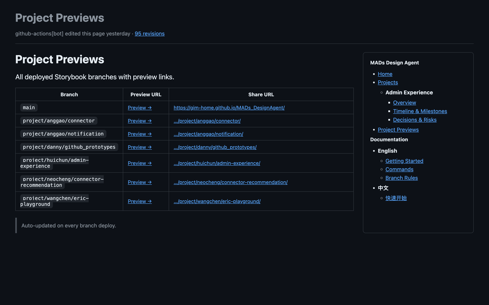

Scout
SENSE提炼变化
从沟通和文档中识别决策、风险、约束与下一步。
AI Design Workflow
AI 已经会“做事”。现在要解决的是：前一步的信息，如何成为下一步的上下文。
01 · The Shift
做初稿、整理会议、解释背景、同步进度。
补足上下文、判断输出、纠正方向、对结果负责。
02 · The Gap
局部正确，不等于项目方向正确。
03 · The Loop
讨论、文档、设计评论、代码变化
只保留决策、风险、约束与下一步
结构化、可追溯、可被 AI 读取
基于完整上下文设计、实现与更新
04 · Clear Roles
从沟通和文档中识别决策、风险、约束与下一步。
用 Wiki 与 repo 留下一份结构化、可追溯的项目记忆。
让本地或云端 agent 带着项目上下文设计、编码和更新。
05 · Working Proof


结果：更少重复解释，更快进入 review。
06 · Human Judgment
定义问题，拆解任务，纠正方向。
确认方案、体验与代码是否可靠。
决定什么信息值得被长期继承。
解释选择，并对最终结果负责。
07 · Next
目标不是多一个 agent，
而是让关键上下文始终到达下一步。